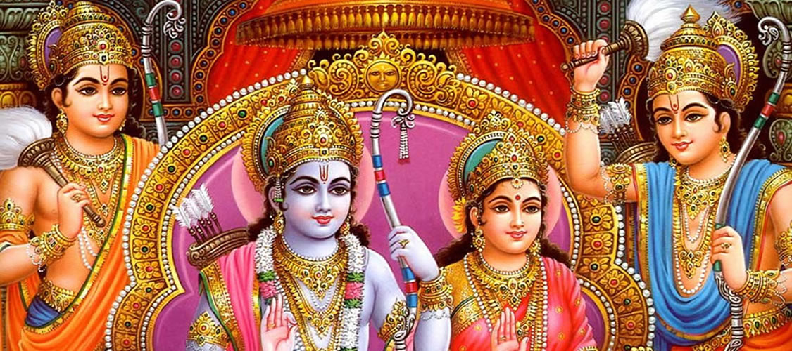
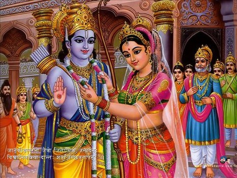

 |
 |
Ramayana,a name so familiar amongst hindus that even children know what ramayana is about,its characters,important incidents etc.This is in contrast to another epic The Mahabharatha....
People do know what it is but not as perfect as the ramayana.....Some even don't know that Lord Krishna is actually the central figure of mahabharatha ......They believe mahabharatha is all about pandavas and has no relation to Krishna...
Anyways,how did ramayana begin?My question is how did Lord Vishnu realize that the time for Ram-avatar has come? Well, you can argue that he is a god he'll just know those things.....But a few incidents triggered Ramayana ....In this story we will learn about these incidents.
The curse of narada:
Narad muni or simply narada was a sage and an ardent devotee to lord vishnu.After having performed a great penance, narada was able to conquer all his senses and won his battle against them.Overwhelmed by the fact that he was able to gather all his senses together , narada set out to inform this news to his beloved,Lord Vishnu.
Lord Vishnu too was very happy to hear this news.Then,narad set out walking in a city where he happened to spot a beautiful young princess dancing outside her palace.Narad at once had the desire to marry her.So,he sought the help of vishnu.Narad asked vishnu to make him the most handsome man so that the princess would choose him in her swayamwar.Vishnu acted accordingly and gave narad the finest clothes,shining jewelery but the face of a monkey.Vishnu did this because narad was a sage and should remain unmarried.Narad's proclamation of conquering all his senses is definitely not true.
So,narad went to her swayamwar hoping that the princess would definitely choose him on account of his handsomeness.But, everybody at the swayamwar burst out laughing!.Well,it was a hilarious scene indeed,a princess most beautiful about to get married and there stood a monkey who was hoping to get married to her.
The princess eventually selected Lord Vishnu and placed the garland in his neck. After narad realized he had a monkey face,he was enraged with vishnu.Without a second thought he cursed vishnu that one day you will seek the help of monkeys to find your beloved love.Monkeys will be your devotees and you will be devoted to them as well.
Now,the aftermath of this curse is quite interesting.Vishnu accepted the curse with a smile. Why did he do that? Well,Jaya-Vijaya were cursed to born as mortals on earth remember.Hence,inorder to kill Ravana,due to narada's curse vishnu was able to take birth as Ram on earth and thus started the great "Ramayana".Narada's curse turned out to be an advantage for Vishnu, isn't it? Now,can we say that Vishnu was fully aware of all this even before they happened?? Well,what do you think..let me know.